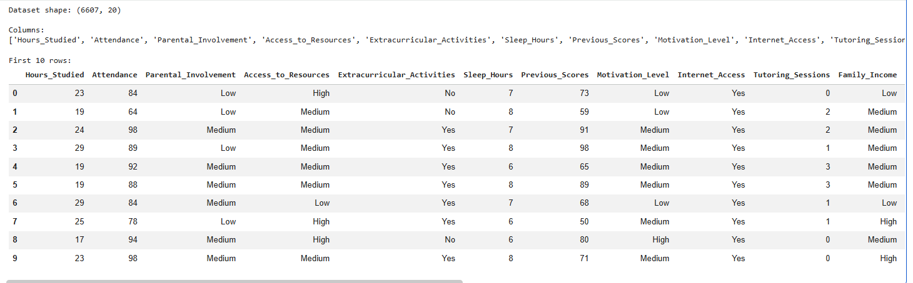
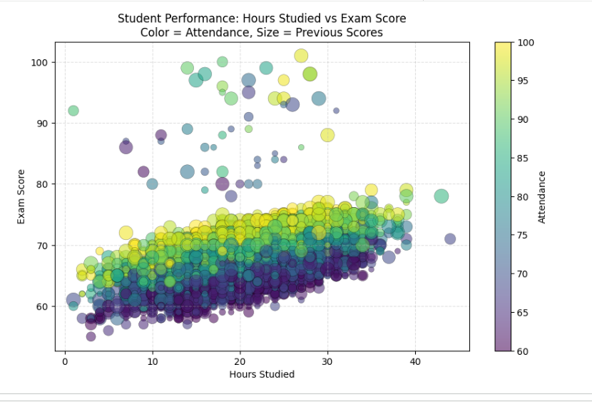
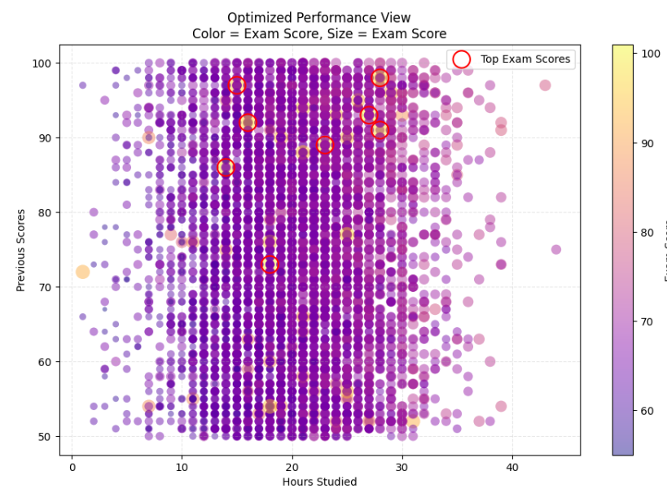
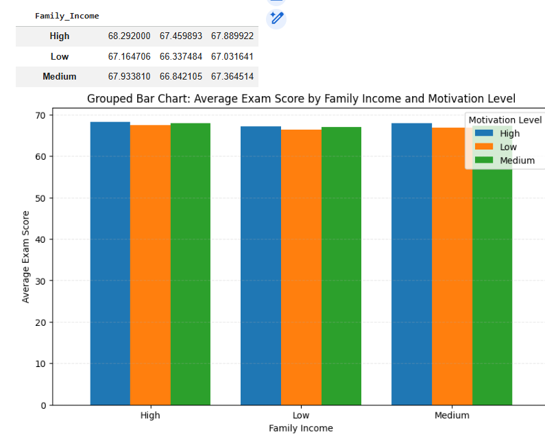
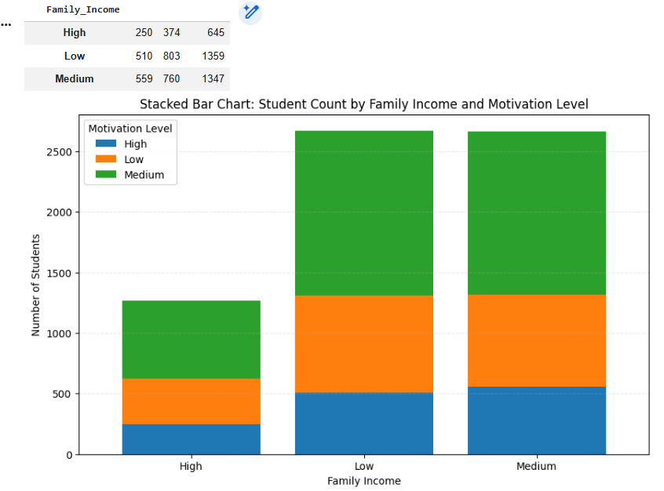
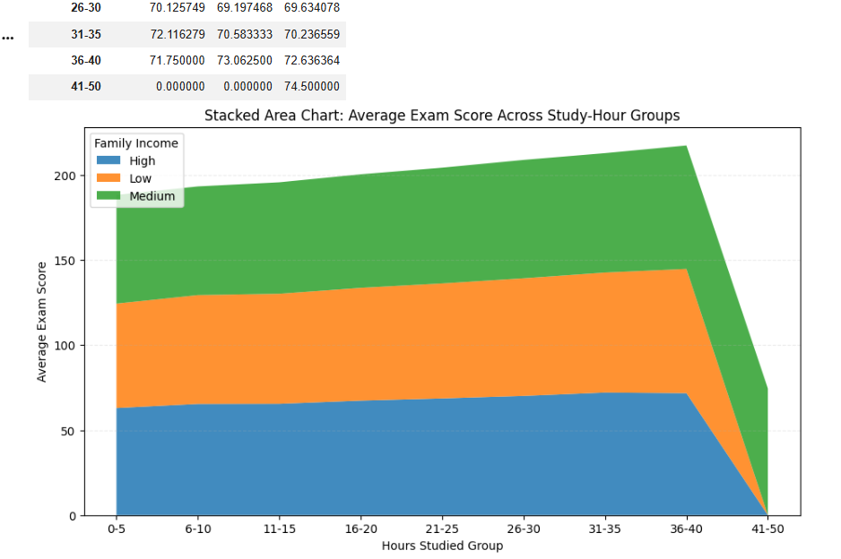
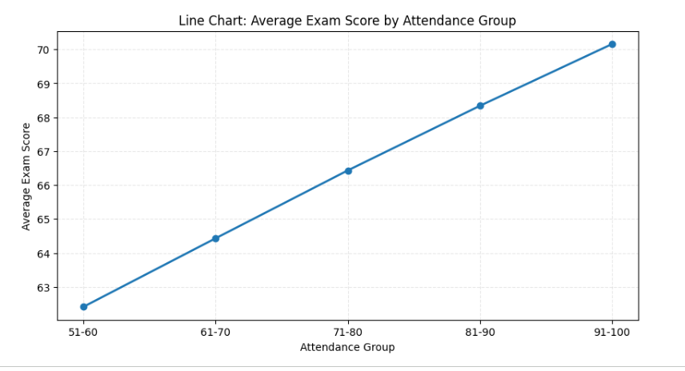
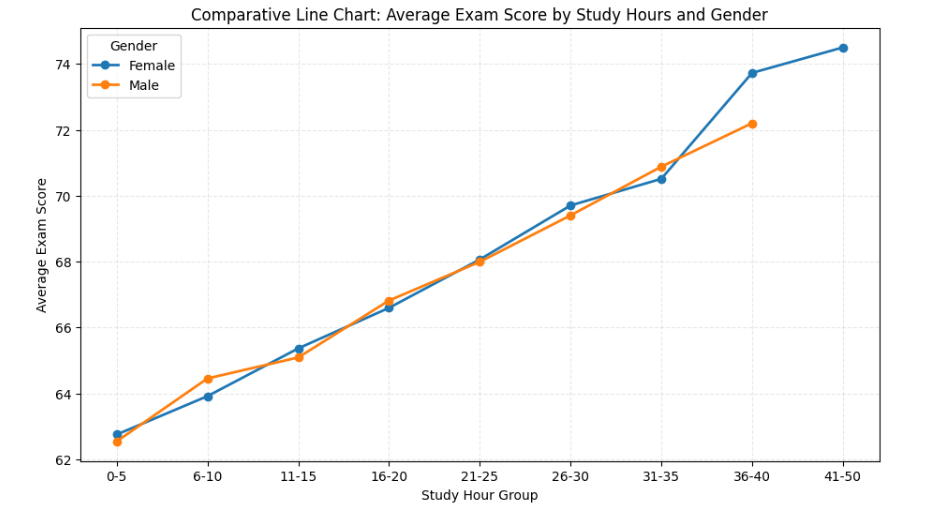

This website presents the results of ICE-9 using the Student Performance Factors dataset. It includes visualizations created with Python and explanations showing how color, size, grouped comparisons, area trends, and line relationships help in understanding student performance.
The dataset used for this lab contains information about several academic and personal factors that influence student performance. It includes attributes such as hours studied, attendance, previous scores, family income, motivation level, and exam score. Since the dataset contains both quantitative and categorical columns, it is suitable for multiple visualization methods.
In this website, the visualizations are organized into separate sections for better readability. The first section explains how color and size were used along with x-y encoding. The second section presents grouped bar charts, stacked bar charts, and a stacked area chart. The third section focuses on line charts used to study trends and comparisons.
A sample of the dataset was displayed in Python to understand the structure of the data. The dataset contains several columns describing student behavior, background, and academic performance. Numerical columns such as hours studied, attendance, previous scores, and exam score were useful for building visual comparisons. Categorical columns such as gender, family income, and motivation level helped in comparing student groups.
A scatter plot was created using hours studied on the x-axis and exam score on the y-axis. To improve the information shown in a single graph, color was used to represent attendance and size was used to represent previous scores. This allowed multiple attributes to be visualized together without creating separate charts.
The graph made it easier to observe that students who study more often tend to score higher, and students with better attendance and stronger previous scores also appear in stronger performance regions.
The graph was improved by reducing point overlap using transparency, adjusting marker sizes for better visual balance, and selecting a more readable color palette. Additional formatting such as axis labels, title design, and grid lines made the chart easier to understand. These changes improved clarity and reduced confusion when multiple points were close to each other.

Screenshot of part of the dataset shown in Python.

Scatter plot using x-y channels with color and size encoding.

Improved version with better readability and reduced overplotting.
The grouped bar chart was used to compare average exam scores across different categories of family income and motivation level. This chart made it possible to compare multiple groups side by side and identify which combinations produced better academic outcomes.
The visualization showed that students with higher motivation generally performed better. It also suggested that family income may have some influence, but motivation appeared to have a stronger and more direct connection with exam performance.
The stacked bar chart showed the number of students in each family income category, divided by motivation level. This chart was useful for understanding the composition of each category and observing how students were distributed across motivation groups.
A stacked area chart was created using grouped study-hour ranges. The chart showed how average exam scores changed across study-hour intervals, while also showing the contribution of family income groups. This chart was useful for viewing cumulative trends and how multiple groups changed across a continuous variable.
The trend suggested that exam scores generally increase with study hours. The differences between family income groups were visible, but the overall upward movement indicated that study effort plays a major role in student success.

Comparison of average exam score across student groups.

Distribution of students by category shown in stacked form.

Trend of average exam score across study-hour groups.
The first line chart showed how average exam score changed across attendance ranges. This visualization clearly indicated a positive trend. Students with better attendance usually achieved higher exam scores. The line chart was helpful because it showed progression in a simple and easy-to-read form.
The second line chart was designed for comparison. It displayed performance trends for different student groups across study-hour ranges. Each line represented one category, making it possible to compare whether all groups followed the same pattern or whether some groups improved more than others.
The chart showed that all groups generally improved as study hours increased. Although there were small differences between the lines, the overall pattern remained similar, suggesting that study effort benefits students across groups.
Both line charts confirmed that attendance and study hours are strongly associated with better performance. These visualizations were especially useful because they showed gradual changes and made it easy to compare trends. Compared with individual values in a table, the line charts offered a clearer understanding of how academic outcomes improve with consistent effort and participation.

Average exam score trend across attendance ranges.

Performance comparison between groups across study-hour ranges.